Views, Dialogs and Editors
|
| Quick Search |
The new Quick Search dialog provides a convenient, simple and fast way to run a textual
search across your workspace and jump to matches in your code. The dialog provides a quick overview
showing matching lines of text at a glance. It updates as quickly as you can type and allows for quick
navigation using only the keyboard. A typical workflow starts by pressing the keyboard shortcut Ctrl+Alt+Shift+L
(or Cmd+Alt+Shift+L on Mac). Typing a few letters updates the search result as you type. Use Up-Down arrow keys
to select a match, then hit Enter to open it in an editor.
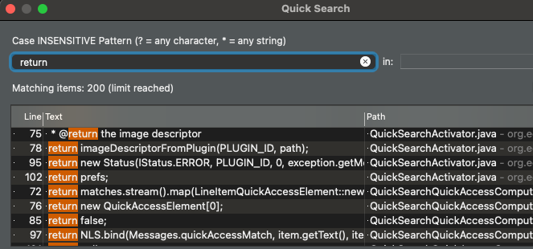
|
| Save editor when Project Explorer has focus |
You can now save the active editor even when the Project Explorer has focus. In cases where an extension contributes Saveables to the Project Explorer,
the extension is honored and the save action on the Project Explorer will save the provided saveable item instead of the active editor.
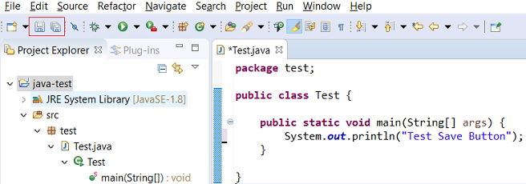
|
| "Show In" context menu available for normal resources |
The Show In context menu is now available for an element inside a resource project on the Project Explorer.
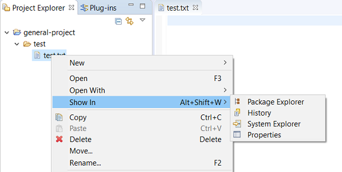
|
| Inline rename for normal resources while in Project Explorer |
In the Project Explorer, renaming (with the F2 shortcut or Rename context-menu) will start an inline rename for normal resources.
After hitting the Enter key, a dialog will let you review the rename operation before performing the rename.

|
| Show colors for additions and deletions in Compare viewer |
In simple cases such as a 2-way comparison or a 3-way comparison with no merges and conflicts, the Compare Viewer now shows different colors,
depending on whether text has been added, removed or modified. The default colors are green, red and black respectively.
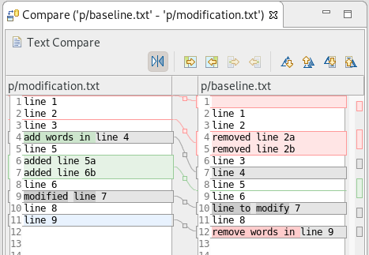
The colors can be customized through usual theme customization approaches, including using related entries in the Colors and Fonts
preference page.
|
| Editor status line shows more selection details |
The status line for Text Editors now shows the cursor position, and when the editor has something selected,
shows the number of characters in the selection as well. This also works in the block selection mode.
These two new additions to the status line can be disabled via the General > Editors > Text Editors preference page.
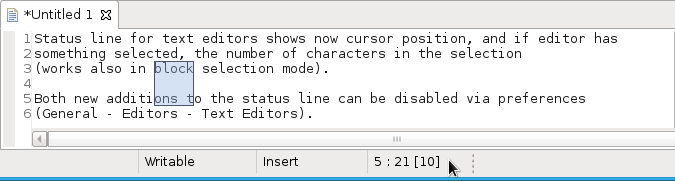
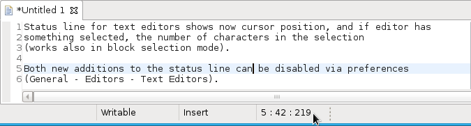
|
| Shorter dialog text |
Several dialog texts have been shortened. This allows you to capture the important information faster.
Previously:
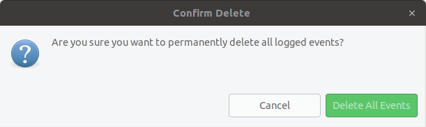
Now:
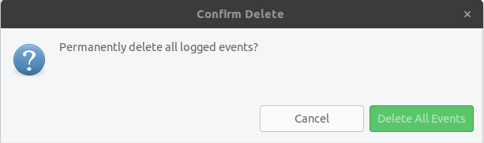
|
| Close project via middle-click |
In the Project Explorer, you can now close a project using middle-click.
|
Debug
|
| Improved usability of Environment tab in Launch Configurations |
In the Environment Tab of the Launch Configuration dialog, you can now double-click on an environment variable name or value and start editing it directly from the table.
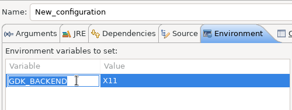
Right-clicking on the environment variable table now opens a context menu, allowing for quick addition, removal, copying, and pasting of environment variables.

|
| Show Command Line for external program launch |
The External Tools Configuration dialog for launching an external program now supports the Show Command Line button.
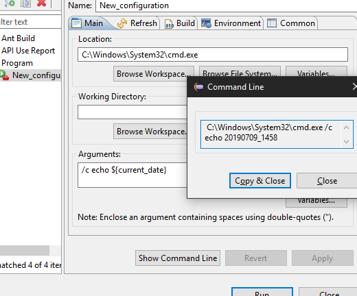
|
Preferences
|
| Close editors automatically when reaching 99 open editors |
The preference to close editors automatically is now enabled by default. It will be triggered when you have opened 99 files.
If you continue to open editors, old editors will be closed to protect you from performance problems.
You can modify this setting in the Preferences dialog via the General > Editors > Close editors automatically preference.
|
| In-table color previews for Text Editor appearance color options |
You can now see all the colors currently being used in Text Editors from the Appearance color
options table, located in the Preferences > General > Editors > Text Editor page.
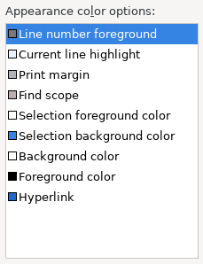
|
| Automatic detection of UI freezes in the Eclipse SDK |
The Eclipse SDK has been configured to show stack traces for UI freezes in the Error Log view by default for new workspaces.
You can use this information to identify and report slow parts of the Eclipse IDE.
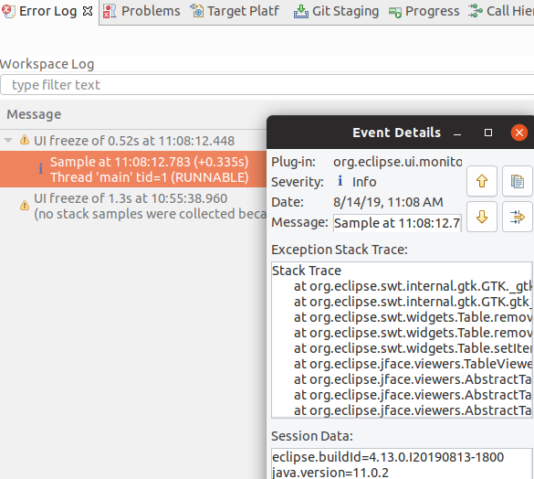
You can disable the monitoring or tweak its settings via the options in the General > UI Responsiveness Monitoring preference page as shown below.
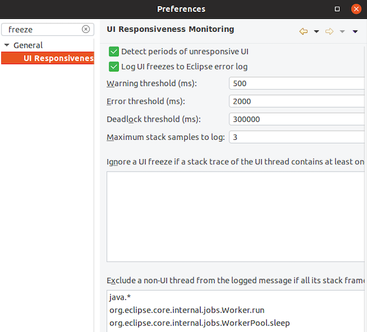
|
Themes and Styling
|
| Start automatically in dark theme based on OS theme |
On Linux and Mac, Eclipse can now start automatically in dark theme when the OS theme is dark.
This works by default, that is on a new workspace or when the user has not explicitly set or changed the theme in Eclipse.
|
| Display of Help content respects OS theme |
More and more operating systems provide a system wide dark theme. Eclipse now respects this system wide theme setting
when the Eclipse help content is displayed in an external browser. A prerequisite for this is a browser that supports
the prefers-color-scheme CSS media query.
As of writing this the following browser versions support it:
- Firefox version 67
- Chrome version 76
- Safari version 12.1
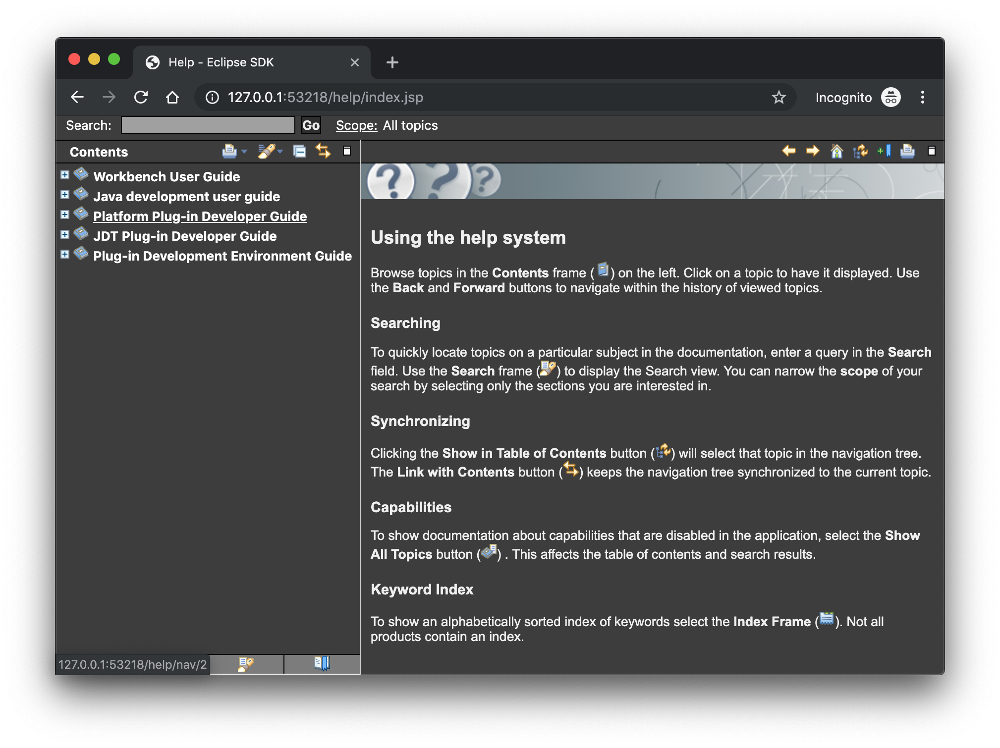
|
| Help content uses high resolution icons |
The Help System as well as the help content of the Eclipse Platform, the Java Development Tooling and
the Plug-in Development Environment now use high resolution icons.
They are now crisp on high resolution displays and also looks much better in the dark theme.
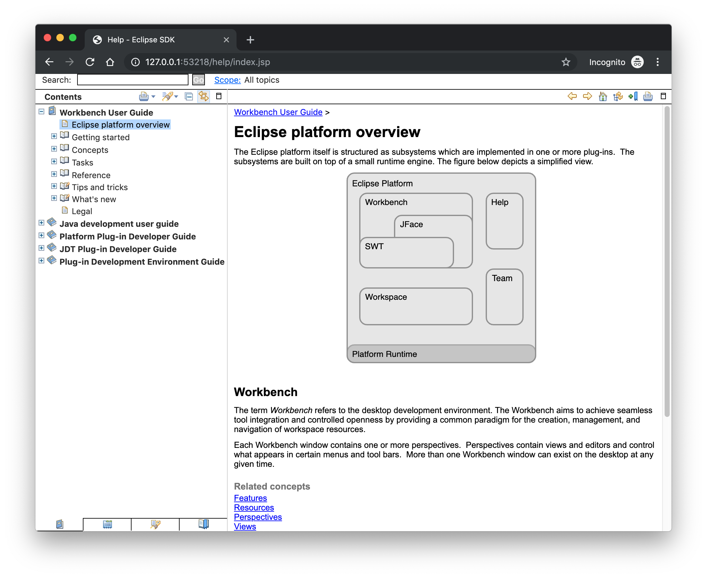
|
| Improved dark theme on Windows |
Labels, Sections, Checkboxes, Radio Buttons, FormTexts and Sashes on forms now use the correct background color in the dark mode on windows.
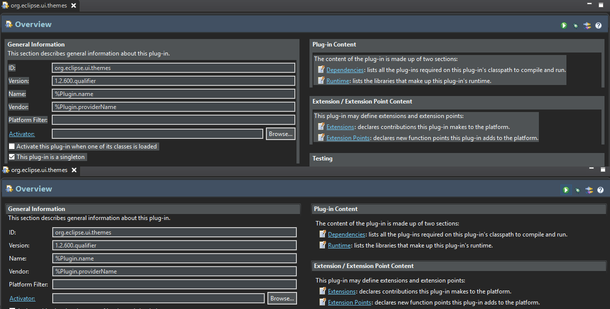
|
General Updates
|
| Interactive performance |
Interactive performance has been further improved in this release and several UI freezes have been fixed.
|
| Show key bindings when command is invoked |
For presentations, screen casts and learning purposes, it is very helpful to show the corresponding
key binding when a command is invoked. When the command is invoked (via a key
binding or menu interaction) the key binding, the command's name and description are shown
on the screen.

You can activate this in the Preferences dialog via the Show key binding when command is invoked check box on the General > Keys preference page.
To toggle this setting quickly the command 'Toggle Whether to Show Key Binding' can be used (e.g. via the quick access).
|